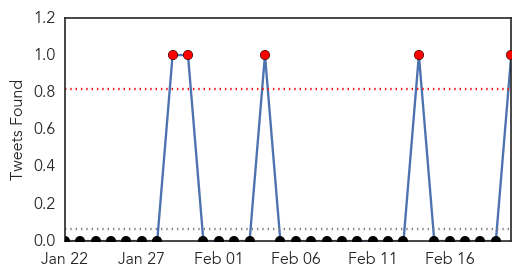

MERS
30-Day Web Trend
13 alerts, 0 warnings

30-Day Twitter Trend
5 alerts, 0 warnings

Article Locations

Article Confidences

Top Articles:
- 0.999
- News and Press Release Distribution
- 0.998
- News Scan for Feb 20, 2015
- 0.997
- Saudi MERS deaths surge: Health ministry
- 0.997
- Malaysia General Business Sports and Lifestyle News
- 0.997
- Saudi Mers deaths surge says health ministry
- 0.995
- Middle East respiratory illness spooks Hong Kong, brings back memories of Sars
- 0.995
- Saudi MERS deaths surge
- 0.992
- Most MERS victims are 50 and above
- 0.988
- MERS war stepped up as 5 lives lost in 1 day
- 0.984
- Metro, News, The Philippine Star
- 0.975
- PH mapping Middle East hospitals with MERS cases
- 0.973
- Filipina nurse already clear of MERS-CoV
- 0.889
- More coronavirus cases expected
- 0.853
- OFWs told to remain vigilant vs MERS-COV
Top Tweets:
- 0.532
- Cases of MERS-CoV in Saudi Arabia are Reported to WHO http://t.co/A7TASqzXGp via
Cholera
30-Day Web Trend
0 alerts, 0 warnings

30-Day Twitter Trend
2 alerts, 0 warnings

Article Locations

Article Confidences

Top Articles:
- 0.997
- Mozambique cholera deal toll reaches 31
- 0.995
- UN Praises Cuba for Haiti Cholera Response
- 0.993
- Ancient Italian Churchyard Studied For Cholera DNA
- 0.990
- Malawi: Epidemics threaten survivors one month after the flood
- 0.987
- Malawi: Acute medical needs a month after the floods
- 0.979
- Six killed in suspected cholera outbreak in southern Nigeria
- 0.935
- UN Coordinator Against Cholera in Haiti to Visit Cuba
- 0.799
- Ghana, Business Advice, Jobs, News, Business Directory, Real Estate, Finance, Forms, Auto
- 0.786
- Cholera outbreaks stark reminder to get serious about sanitation
- 0.741
- NDDC Donates Drugs To Bayelsa Govt
- 0.687
- Mozambique: Floods Emergency appeal MDRMZ011 operations update n° 2 - Mozambique
- 0.669
- Uganda: Cholera Outbreak DREF operation n° MDRUG032 Final Report, 19 Feb 2015 - Uganda
- 0.518
- Wise Water Foundation calls on Methodist Presiding Bishop
Top Tweets:
- 0.896
- RT: Southern Africa Wkly Report 10-16Feb: 1908 cholera cases w 24 deaths confirmed in Nampula Niassa & Tete Mozambique http://…
- 0.578
- & colleagues on premptive use of cholera vaccines in high risk areas of Ebola countries http://t.co/WYQpfxmMyx vaccineswork